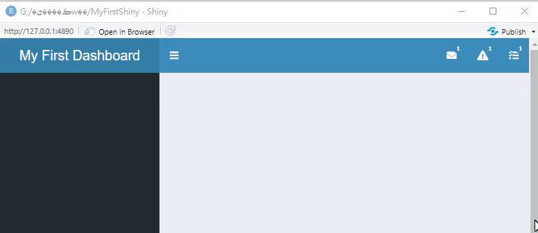
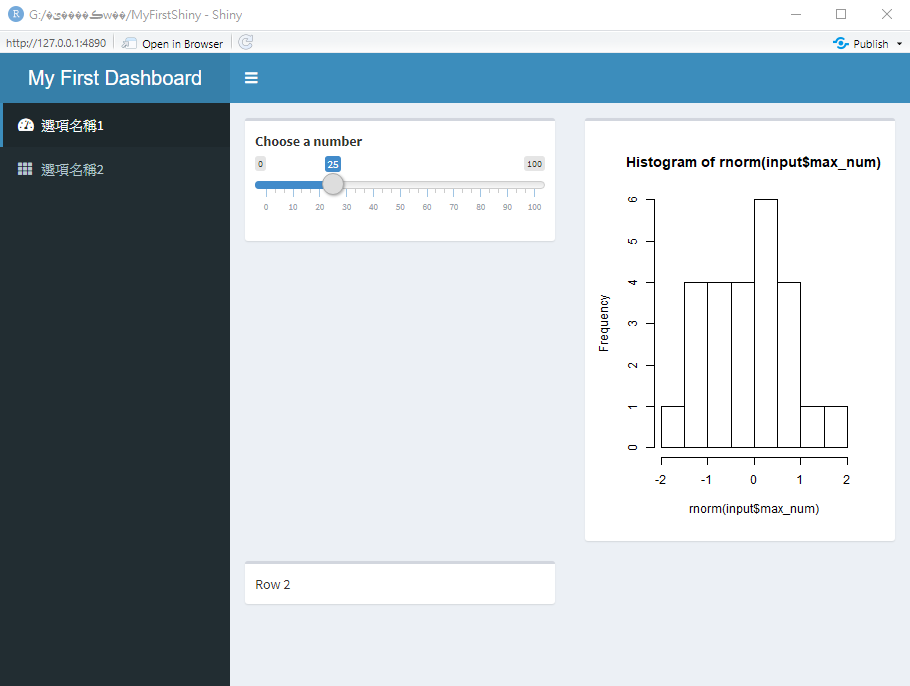
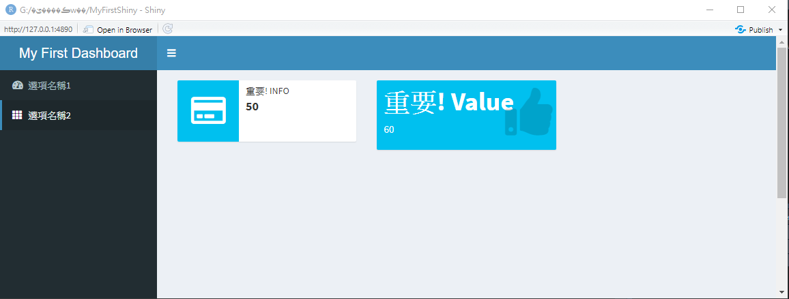

Ch 9 儀表板
儀表板 (Dashboard)通常是指將資料分析結果，如圖、表與重要的數字等，以單一頁面 (通常是網頁)的方式呈現，目前有許多軟體與服務提供使用者快速的製作自己的儀表板:
- Power BI: 跟微軟的Office軟體整合的很不錯，免費服務包含單機使用或是在公開網路儀表板，若要開發需要帳號密碼授權的儀表板，則需要付費
- tableau: 應該是最紅的儀表板服務，一樣有免費與付費服務供使用
- SAS Visual Analytics
- QlikView
除了上述服務外，當然也可以使用Shiny App開發儀表板，Shiny的主要特色就是將資料分析結果轉換成互動式的網頁應用程式，簡單來說就是動態網站，因此也很適合做為開發儀表板的工具。跟上述服務不同的是，要Shiny App需要學習R語言，也須學習Shiny App的開發方式，相較於拖拉式的服務，入門稍微困難一些，但也增加了許多彈性。
9.1 開發儀表板步驟
在開始用Shiny開發儀表板前，建議先完成以下3個步驟:
- 釐清設計儀表板的目的: 儀表板的設計通常與需達成的目的有關，如幫助商業決策、監控工廠訂單、以及監控傳染病等，因此在設計儀表板前，建議先將目標訂定清楚，再開始動工。
- 設定目標對象: 是否有特定的目標，若特定目標過去已有看類似報表的習慣，呈現分析結果的方式是什麼? 如果目標為一般人，可能沒有足夠的背景知識，圖表複雜度與說明文字的配置則需要多做考慮。
- 了解使用方式: 是否都用電腦看? 還是用平板或是手機? 如果用電腦看，通常螢幕大概多大? 是否會用投影的方式在會議中呈現? 以上幾個問題會影響版面設計，以及字型大小等，建議先釐清。
完成上述步驟後，即可開始開發儀表板，而用Shiny開發儀表板大多遵循下列4個步驟:
- 將須呈現的資料載入儀表板
如何快速的將資料載入是設計儀表板必須解決的問題，若資料載入時間太久，通常分析也會很慢，會降低使用者體驗，因此，若需要分析的資料很大，可考慮用批次的方式，撰寫其他程式先作預處理，降低資料量，以加快資料存取速度。資料匯入的方式與一般R程式相同，可參考資料科學與R語言 - 資料讀取與匯出章節。一般分為以下幾種情境:
- 讀取資料庫: 可用
DBI套件 - 讀取檔案: 可用
readr套件，可參考資料科學與R語言 - 資料讀取與匯出章節 - 透過API載入: 可用
jsonlite,readr, 或是xml2套件，可參考資料科學與R語言 - 透過API讀取資料章節
資料處理分析
資料呈現
資料呈現可能有以下方式:
- 數字與文字:
renderText() - 表格:
renderTable(),DT套件支援互動式表格 - 圖片:
renderPlot() - 地圖:
ggmap套件，或是leaflet套件支援互動式地圖
- 增加互動性
使用先前介紹的輸入元件4，讓使用者調整輸入值，作為改變輸出圖表的依據。以開發新冠肺炎案例數呈現的儀表板為例，可能可以讓使用者用下拉選單選擇呈現國家、用check box選擇區域、或是用slider選擇特定時間區間等。
9.2 儀表板樣式設計
使用shinydashboard(Chang and Borges Ribeiro 2018)套件，使用者可快速製作像儀表板的Shiny App，因原理與基本架構都是使用Shiny，程式的基本架構與Shiny App相同，包含使用者介面(User Interface)與伺服器端程式 (Server Instruction)兩個部分。使用shinydashboard套件，也須在第一次使用前安裝，之後則執行載入即可。
9.2.1 dashboardPage()
比較特別的是，在使用者介面(User Interface)中，通常會使用dashboardPage()函數建構，而非常見的fluidPage()函數。
Shiny Dashboard的標準架構包括儀表板標頭 (header) dashboardHeader()、側邊選單 (sidebar) dashboardSidebar() 以及主頁面 (body) dashboardBody() 等三個部分，可依序將此三部分分別輸入在dashboardPage()函數中。
比較複雜的應用程式，也可使用下列方式撰寫儀表板架構:
9.2.2 標頭
dashboardHeader()維儀表板儀表板標頭，可在標頭中用title參數設定儀表板標題，如下列程式碼所示:
ui <- dashboardPage(
dashboardHeader(title="My First Dashboard"),
dashboardSidebar(),
dashboardBody()
)除了標題外，標頭部分還可使用dropdownMenu()加入其他選單，常見的元件有:
- 訊息選單
messageItem() - 通知選單
notificationItem() - 工作選單
taskItem()
可分別在畫面右上角加入選單資訊，在dropdownMenu()中，可用type設定右上角選單呈現的icon，並對應上述三個常見的元件，三個元件各有特定參述可供設定，可依需求選用，比較特別的是在工作選單中可設定每個工作的進度。
ui <- dashboardPage(
dashboardHeader(title="My First Dashboard",
dropdownMenu(type = "messages",
messageItem(
from = "訊息來源",
message = "訊息內容")
),
dropdownMenu(type = "notifications",
notificationItem(
text = "通知通知",
icon("users"))
),
dropdownMenu(type = "tasks",
taskItem(value = 90,
color = "green","工作進度")
)
),
dashboardSidebar(),
dashboardBody()
)右上角加入選單資訊呈現方式如下圖:

若想在後端修改選單元件，則需使用dropdownMenuOutput()設定輸出元件，並在伺服器端程式用renderMenu()作動態設定。
前端範例:
ui <- dashboardPage(
dashboardHeader(title="My First Dashboard",
dropdownMenuOutput("msg_menu"),
dropdownMenuOutput("tsk_menu")
),
dashboardSidebar(),
dashboardBody()
)後端範例:
server<-function(input,output){
output$msg_menu <- renderMenu({
dropdownMenu(type = "messages",
messageItem(
from = "訊息來源",
message = "訊息內容")
)
})
output$tsk_menu <- renderMenu({
dropdownMenu(type = "tasks",
taskItem(value = 90,
color = "green","工作進度")
)
})
}會得到類似的輸出結果。
若不需要標頭，也可將標頭關掉:
9.2.3 側邊欄位
而側邊欄位dashboardSidebar()可由選單sidebarMenu()組成，每個選單sidebarMenu()中可有多個選項meunItem()，在選項中除可在第一個參數設定選項名稱外，也必須用tabName參數設定選項ID，以及icon參數加上圖示，幫助使用者理解內容，選項ID的功能是用來對應主頁面dashboardBody()的內容。可用的icon可見 Font-Awesome 以及 Glyphicons兩個網站。
ui <- dashboardPage(
dashboardHeader(title="My First Dashboard"),
dashboardSidebar( # 側邊欄位
sidebarMenu( # 選單
menuItem("選項名稱1", tabName = "id_1",
icon = icon("dashboard")),# 選項1
menuItem("選項名稱2", tabName = "id_2",
icon = icon("th"))# 選項2
)
),
dashboardBody()
)若不需要側邊欄位，也可將側邊欄位關掉:
9.2.4 主頁面
主頁面dashboardBody()則是使用tabItems()來排版，在tabItems()中可用多個tabItem()來對應側邊欄位的每個選項，對應方式為設定相同的tabName，而在tabItems()中，再使用列fluidRow和欄位column或是資訊區塊box的方式將圖表排版。排版可參考Ch. 3.3
ui <- dashboardPage(
dashboardHeader(title="My First Dashboard"),
dashboardSidebar( # 側邊欄位
sidebarMenu( # 選單
menuItem("選項名稱1", tabName = "id_1",
icon = icon("dashboard")),# 選項1
menuItem("選項名稱2", tabName = "id_2",
icon = icon("th"))# 選項2
)
),
dashboardBody(
tabItems(
tabItem(tabName = "id_1", # 對應選項1
fluidRow(
box(sliderInput(
inputId = "max_num",
label ="Choose a number",
min = 0, max = 100,
value =25)),
box(plotOutput("hist"))
),
fluidRow(box("Row 2"))
),
tabItem(tabName = "id_2", # 對應選項2
h2("第二頁")
)
)
)
)呈現的效果如下所示:

若有較重要的資訊，需要放在顯眼的地方，且有較特別的樣式，可用infoBox()和valueBox()呈現，這兩個Box的功能差不多，只是樣式稍有不同。
ui <- dashboardPage(
dashboardHeader(title="My First Dashboard"),
dashboardSidebar( # 側邊欄位
sidebarMenu( # 選單
menuItem("選項名稱1", tabName = "id_1",
icon = icon("dashboard")),# 選項1
menuItem("選項名稱2", tabName = "id_2",
icon = icon("th"))# 選項2
)
),
dashboardBody(
tabItems(
tabItem(tabName = "id_1", # 對應選項1
fluidRow(
box(sliderInput(
inputId = "max_num",
label ="Choose a number",
min = 0, max = 100,
value =25)),
box(plotOutput("hist"))
),
fluidRow(box("Row 2"))
),
tabItem(tabName = "id_2", # 對應選項2
infoBox("重要資訊! Info", 50, icon = icon("credit-card")),
valueBox("重要資訊! Value", 60, icon = icon("thumbs-up"))
)
)
)
)呈現的效果如下所示:

References
Chang, Winston, and Barbara Borges Ribeiro. 2018. Shinydashboard: Create Dashboards with ’Shiny’. https://CRAN.R-project.org/package=shinydashboard.